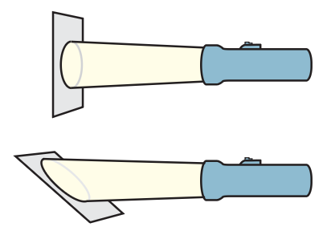

Solar Power
If you step from the shade into the sunshine, you’re noticeably warmed. The warmth you feel isn’t so much because the Sun is hot, because its surface temperature of 6000°C is no hotter than the flames of some welding torches. We are warmed principally because the Sun is so big.6 As a result, it emits enormous amounts of energy, less than one part in a billion of which reaches Earth. Nonetheless, the amount of radiant energy received each second over each square meter at right angles to the Sun’s rays at the top of the atmosphere is 1400 joules (1.4 kJ). This input of energy is called the solar constant. It is equivalent, in power units, to 1.4 kilowatts per square meter (1.4 kW/m2). Solar power is the rate at which solar energy is received from the Sun. The amount of solar power that reaches the ground is attenuated by the atmosphere and reduced by nonperpendicular elevation angles of the Sun. Also, of course, it ceases at night. The solar power received in the United States, averaged over day and night, summer and winter, is about 13% of the solar constant (0.18 kW/m2). This amount of power, illuminating the roof of a typical American house, is twice the power needed to comfortably heat and cool the house year-round. More and more homes are capturing solar energy for space heating and water heating. Also gaining in popularity are photovoltaic shingles that blend almost seamlessly with roofing materials.

Practicing Physics
Does the distance from the Sun, or the angle of the Sun’s rays on Earth, account for frigid polar regions and tropical equatorial regions? You can see the answer for yourself if you hold a flashlight above a surface and note its brightness. When the light strikes perpendicularly, light energy is concentrated, but when the surface is tipped, keeping at the same distance, incident light is more spread out. Can you see that the same energy over a larger area is akin to the low temperatures of the Arctic and Antarctic regions of Earth?
The sketch is of Earth with parallel rays of light coming from the Sun. Count the number of rays that strike region A and equal-area region B. Where is the energy per unit area less? How does this relate to climate?



The cover of this book shows photovoltaic systems that convert sunlight directly to electricity. Photovoltaic cells can be designed for power needs ranging from milliwatts to megawatts, powering a calculator or a generator in a power plant. They also can be located in remote areas that are not readily accessible to utility grid lines. Solar-energy collecting and concentration systems, whether arrays of mirrors or photovoltaic cells, are becoming competitive in cost with electric power generated by conventional power sources.
Figure 16.26 was omitted because no matching captured image was supplied.
Summary of Terms
Solar constant 1400 J/m2 received from the Sun each second at the top of Earth’s atmosphere on an area perpendicular to the Sun’s rays; expressed in terms of power, 1.4 kW/m2.
Solar power Energy per unit time received from the Sun.
Reading Check Question
16.7 Solar Power
29. How much radiant energy from the Sun, on average, reaches each square meter at the top of Earth’s atmosphere each second?